Strain component plots
Strain is the amount of deformation a part experiences in relation to its original size and shape. The external work exerted on a part in causing it to distort from its unstressed state is transformed into strain energy.
To generate strain plots in linear static and linear buckling studies, the Strain elemental result option must be selected in the Create Study (or Modify Study) dialog box. A modal study type produces strain energy component plots by default.
Strain plots
You can use strain plots in linear static, normal modes, and buckling studies to evaluate the amount of deformation or elongation a part experiences in relation to its original size and shape when you apply loads and constraints.
You can review the simulation results for strain by selecting the following result options from the Home tab→Data Selection group:
|
Data type |
Data plots |
|
Result Mode |
(Not applicable) |
|
Result Type |
Strain |
|
Result Component |
(Strain plots listed below) |
- Directional strain plots
-
Directional strain is plotted with respect to the global coordinate system. The global coordinate system shown in these examples is for illustration only; it is not displayed in the Simulation Results environment.
Note:Results that are not applicable are shown in the white mesh color. For example, on the sheet metal model with the 2D surface mesh shown below, if a face being analyzed is normal to the stress direction (X) , a normal stress (X) in that direction is not applicable.
- X Normal Strain
-
For a 2D surface mesh:
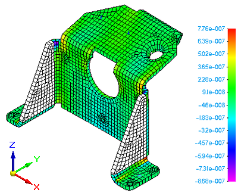
For a tetrahedral mesh:
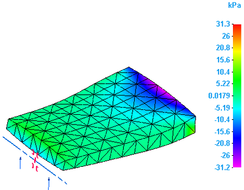
- Y Normal Strain
-
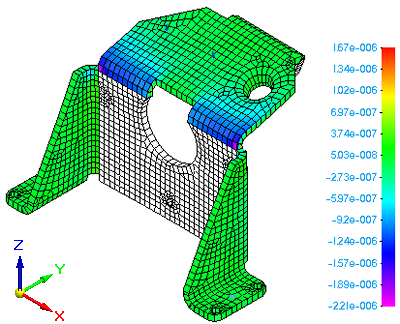
- Z Normal Strain
-
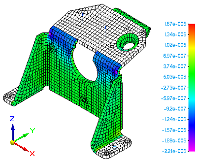
- Directional shear strain plots
-
-
XY Shear Strain
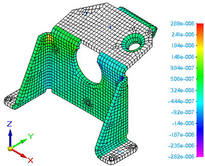
-
YZ Shear Strain
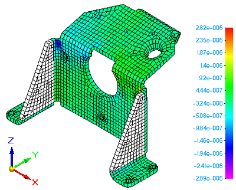
-
XZ Shear Strain
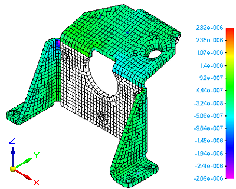
-
- Principal strain plots
-
-
Maximum Principal Strain
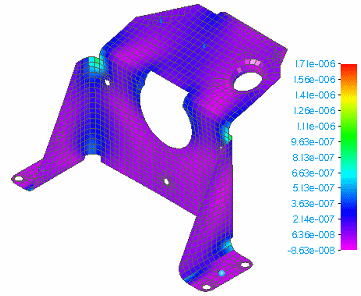
-
Minimum Principal Strain
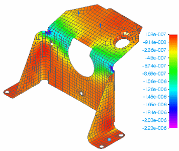
-
Plate PrnStrain Angle—Generated only for 2D surface meshes.
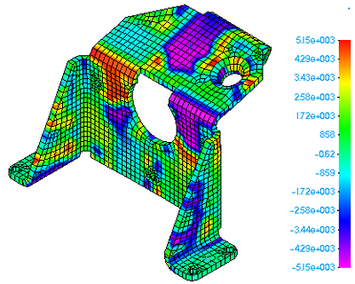
-
Mean Strain
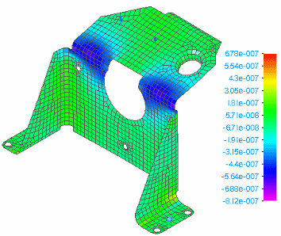
-
Max Shear Strain
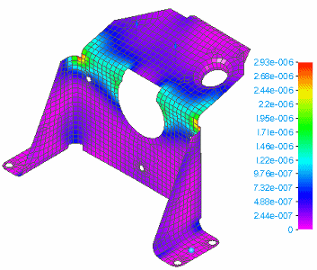
-
Von Mises Strain
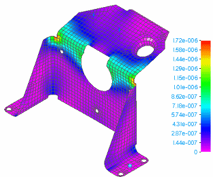
-
Strain energy plots
You can use strain energy plots to evaluate the amount of work required to transform a model from the undeformed to a deformed state.
You can review the simulation results for strain energy by selecting the following data types options from the Home tab→Data Selection group:
|
Data type |
Data plots |
|
Result Mode |
Mode 1, Mode 2, Mode 3, Mode 4 |
|
Result Type |
Strain |
|
Result Component |
(Strain Energy plots listed below) |
-
-
Strain Energy
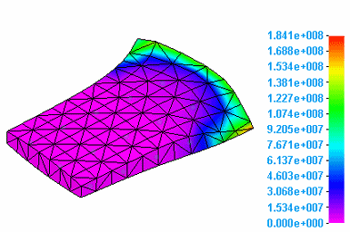
-
Strain Energy Density
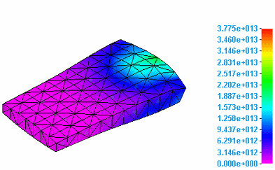
-
Strain Energy Percent
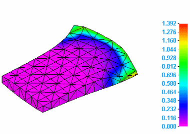
-
How do I
Plot resultsLearn more
Plotting resultsResult plots for mixed mesh models
Displacement component plots
Stress component plots
Constraint component plots
Beam properties
Beam reaction component plots
Beam stress component plots
Beam diagrams
Temperature plots
Heat flux component plots
Applied temperature plots